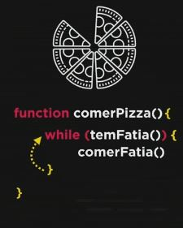
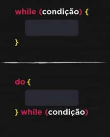
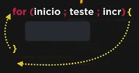
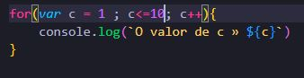
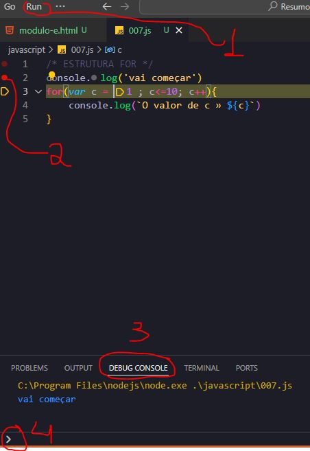

Módulo E
Aula13
Repetições

var fatia = 16
function comerPizza(fatia){
while (fatia > 0){
console.log('comendo uma fatia hum.....')
fatia -=1
console.log (`Restam ${fatia} fatias`)
}
console.log('Acabou! Delicia')
}
console.log(comerPizza(16))

1ª estrutura » Primeiro faz o teste e depois executa o bloco. while(variavel >= 5){executando o bloco até a variavel ser maior do que 5} chamada de estrutura de repetição com teste logico no inicio
2ª estrutura » primeiro executa o bloco e depois faz o teste. Do{executando o bloco até a variavel ser maior do que 5} while (variavel >= 5)
Resumindo com minhas palavras: A primeira estrutura vai realizar a condição, exemplo: Vai ver o valor da variavel ,que para exemplificar é 0, e realizara o teste logico = enquanto 0 menor ou igual a 5 faça o bloco. No segundo caso sera realizado o bloco primeiro, bloco executado e em seguida é realizado teste logico, 0 menor ou igual a 5, caso seja ele retonar e faz o bloco. A diferença entre os dois metodos é que um inicia com a logica e depois executa o bloco e o outro executa o bloco e depois faz a logica para ver se o bloco sera executado novamente, ou seja, na segunda estrutura o bloco sempre será executado pelo menos uma vez mesmo que a codição seja FALSE
Aula 14
Estrutura FOR
A estrutura FOR tem 3 partes, sendo elas (inicio; teste;incremento )
DEBUG
Depuração » 1 - Clicar em RUN na aba superioor do vs code e depois em START DEBUGGING(F5).
2 - Escolher com o mouse a linha do codigo que será iniciado o debugging.
3- Com terminal aberto escolher a aba DEBUG CONSOLE -
4 na caixa de digitaçãousar a tecla F10 para dar sequencia do passo a passo no codigo